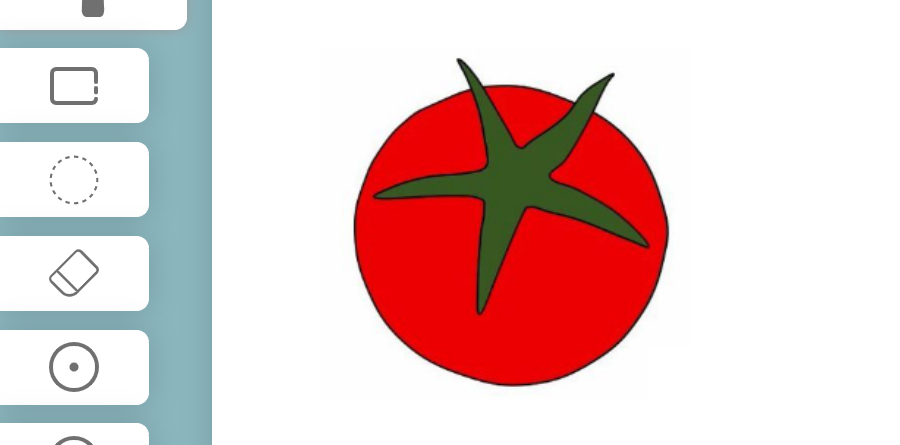
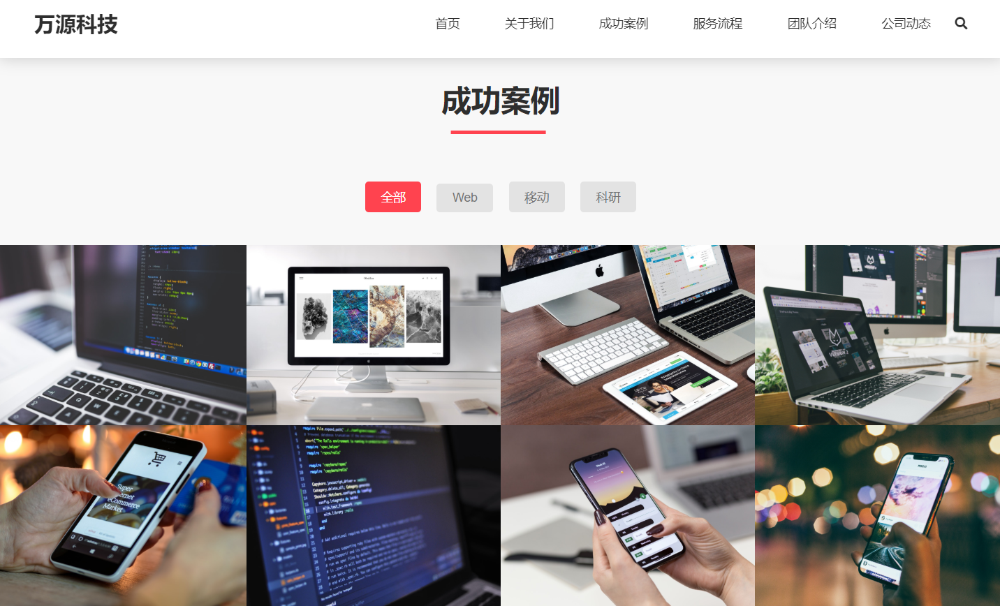
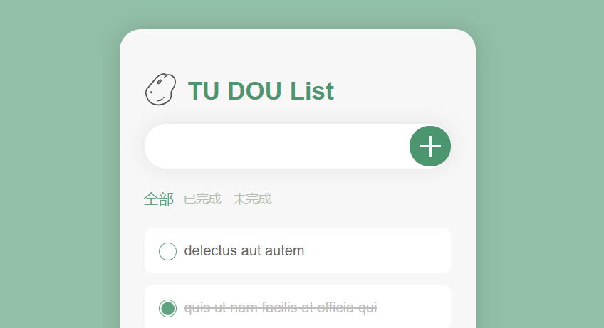
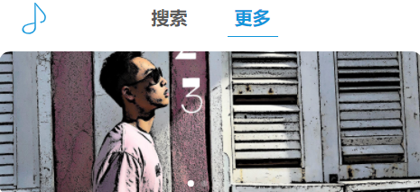

huixies

男 | 23岁 | 前端工程师 | 北京
手机&微信：151343- |
邮箱：huixies@foxmail.com
项目经历
-
冰果 UI
包含多种组件的UI库源码链接 项目预览
该项目使用到了 Vue3 / TypeScript / Scss / vite。
能够快速生成组件，可以对其进行个性化修改。我还制作了官网文档，方便查看样式和代码引用。
在制作UI库的过程中，我了解到了Vue3的相关特性，对组件间的传值方式有了新的理解。
-
寻迹搜索
github用户信息快捷查找工具源码链接 项目预览
该项目使用到了 React / TypeScript / Scss / Webpack。
输入github用户名称，就能够快速查询出该用户填写的个人信息，账号创建时间，最近登陆日期，以及最近的项目更新。将原本复杂的界面简化处理，提高查询效率。
后台信息通过捕获github官方接口得到，最后在netlify上打包上线。这个项目最初使用的是class组件，之后全部替换成函数组件，加强了我对Hooks的理解和应用。
-
顷刻送餐
餐饮配送移动端应用源码链接 项目预览
该项目使用到了 Vue2 / MintUI / Webpack。
使用手机验证码登录注册，通过高德地图的定位API，获取当前地址信息。同时具有外卖应用的基础功能，如编辑接收地址，生成支付页面，计算选定商品总价等。
当组件与页面不断增加时，就需要使用Router和Vuex进行页面跳转和组件传值，使我初步理解了组件化开发的概念。
技能
- 熟悉页面制作技巧，能将设计稿完美还原
- 熟悉前后端分离技术，包括 AJAX、跨域、前端路由、Cookie、Session 等
- 熟练掌握 Vue全家桶，React全家桶的使用。
- 熟悉 ES6，包括 let / Promise / await / 解构赋值
- 了解 TypeScript 的使用，我的一些项目就是 TS 实现的
- 了解 Webpack 的配置和优化
开源项目
-
Canvas画板
源码链接 项目预览
使用Html5中的 Canvas 元素，实现出自由绘制图案的功能。
包括画笔，圆形，矩形，并且能对其颜色粗细进行控制。绘制完成后可以下载保存。
-
万源科技官网
源码链接 项目预览
一个科技类型相关的静态网站，对多种端口大小进行了适配。
采用 原生JS 搭配相应的封装库，包括轮播图，平滑滚动，图片懒加载等。
-
土豆清单
源码链接 项目预览
方便简洁的记事清单，具有增删改查等功能。
使用的是框架是 Vue2 。
-
极客播放器
源码链接 项目预览
这个移动端音乐播放器调用了网易云API，实现新歌推荐，歌曲查询，查看热门评论等功能。
使用的框架是 Vue2 ，并且用到了 Vant 组件库。
教育经历
-
电子信息工程 本科 2017.9~2021.7其他链接
我的Github 目前有200次提交
知乎文章 20篇技术相关